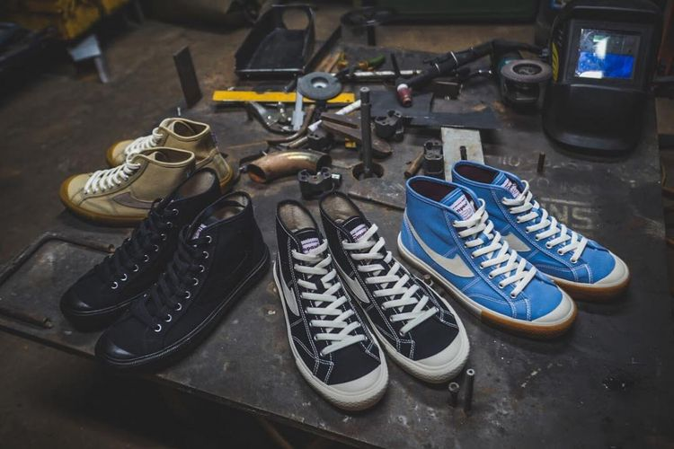
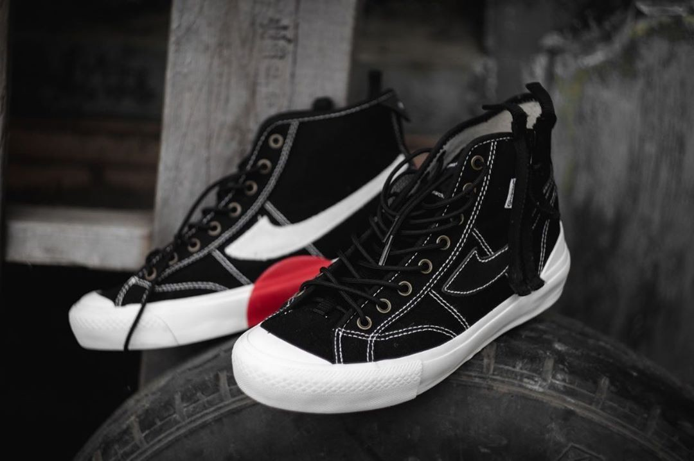
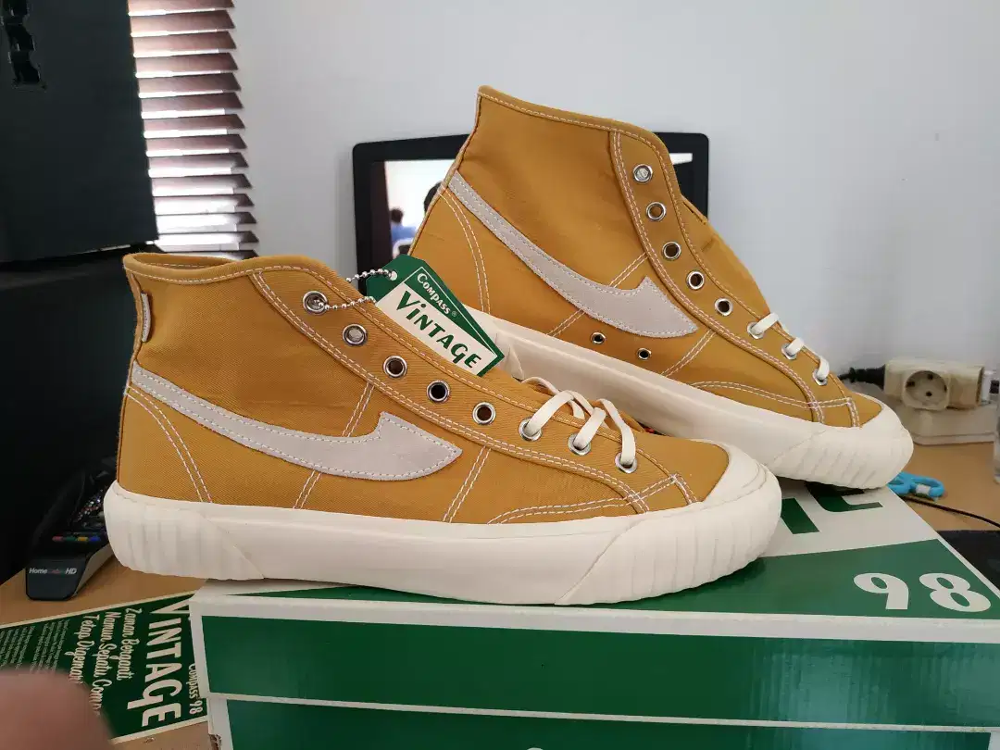
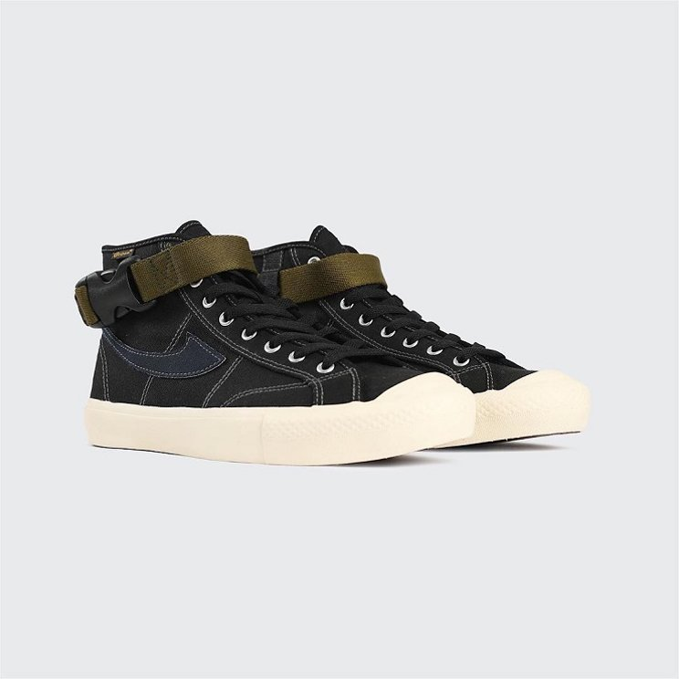
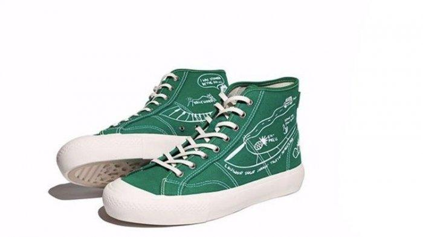
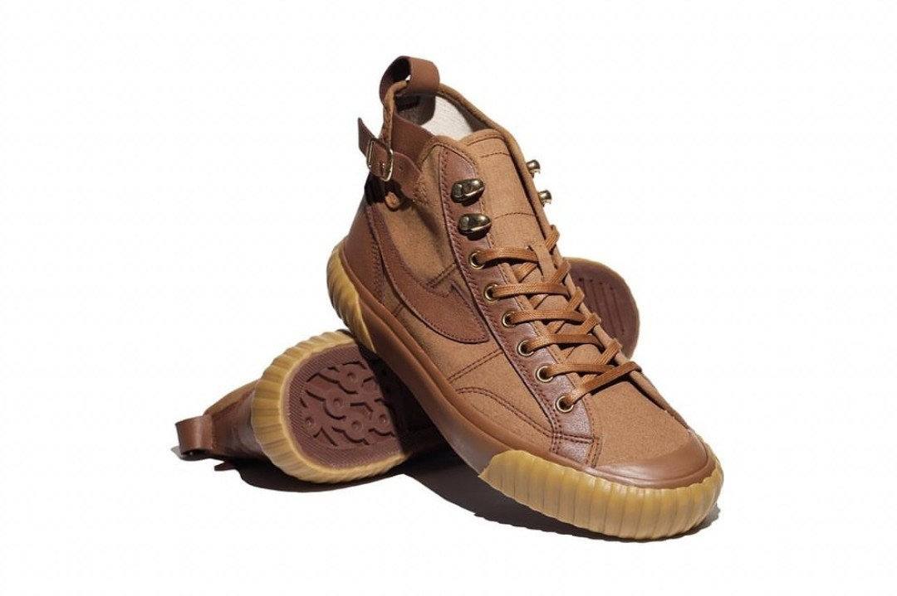
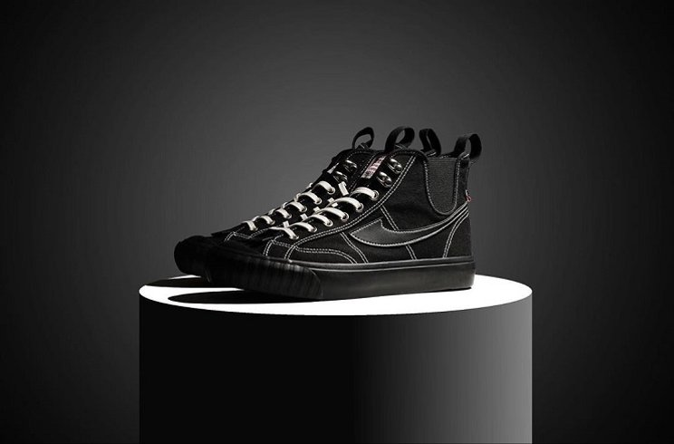
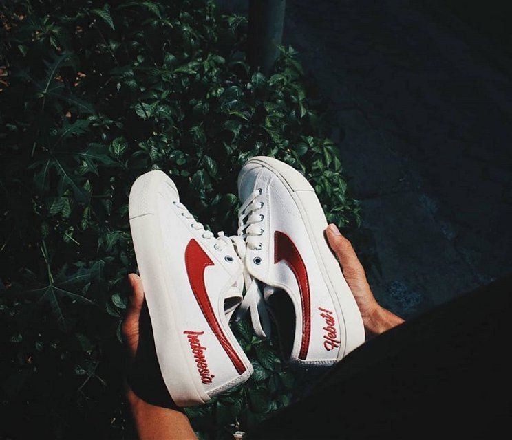

Sejarah
Awalnya Sepatu Compass ini merupakan brand Gazelle Sport yang berdiri pada tahun 1988 oleh Alm. Kahar Setiadi dibawah naungan PT. Kompas Mas. Lalu pada tahun 1998 didirikanlah Sepatu Compass oleh anaknya yaitu Bapak Ir. Kahar Gunawan .MM. Namun, Compass sempat mengalami keterpurukan pada tahun 2000an. Alasannya karena minat masyarakat yang cenderung ke produk impor.
Sepatu Compass lalu mulai bangkit di tahun 2017 lewat model yang di rebranding oleh Aji Handoko Purbo dengan siluet Gazelle, Bravo 001, Proto 1 "Research & Destroy" & Vintage 98 yang begitu digemari oleh semua kalangan, baik millenial hingga orang tua.
Produk

Sepatu Compass memiliki 3 seri yang diproduksi secara massal yaitu Gazzele yang merupakan seri yang paling basic lalu ada Vintage 98 dan ada Proto 1 "Research & Destroy".
Selain itu Compass juga collabs dengan beberapa brand atau artis dan mengeluarkan seri seperti Compass Bravo, Compass x Pot Meets Pop, Compass x Oldblue.co
, Compass x Elders, Compass seri Low "Indonesia Hebat", Compass x Kelompok Penerbang Rocket, Compass x Mata Najwa.
Seri Basic
Compass Gazelle
.webp)
Salah satu model klasik dari sepatu Compass yang paling diburu adalah Gazelle. Aji Handoko Purbo, creative director dari sepatu Compass yang mendesain sendiri bentuk Gazelle di tahun 2017. Terdiri dari model high dan low, Gazelle memiliki karakteristik bentuk yang dominan dengan model sepatu vintage di tahun 40-an.
Selain menyerupai sepatu Converse, sepatu Compass seri Gazelle juga ditawarkan dengan harga yang terjangkau. Untuk Gazelle high sneakers bisa dibeli dengan kisaran harga Rp320 ribuan. Sedangkan Gazelle model low bisa kamu dapatkan dengan kisaran harga Rp270 ribuan. Compass seri Gazelle memakai bahan upper canvas dan vulcanized sol yang tahan lama dan nyaman dikenakan.
Compass Research & Destroy (R&D) Proto 1

Salah satu seri Compass yang sangat hype di peluncurannya tahun 2019. Untuk mendapatkan sepasang Compass seri Research & Destroy Proto 1 pun harus mengikuti undian (ravel) secara offline. Untuk pengadaan online, seri sepatu ini ludes produknya hanya dalam waktu 1 menit saja.
Compas R&D Proto 1 ini memiliki model low dengan canvas upper. Adanya detail ritsleting menyerupai pita pada sisi kanan membuat Compass model vintage ini begitu unik untuk dikoleksi. Normalnya harga dari Compass R&D Proto 1 Rp468.000 tapi karena sudah sold out dalam waktu yang cepat, harga reseller bisa mencapai Rp1 jutaan.
Compass Vintage 98

Sepatu Compass dengan bangga mempersembahkan koleksi Compass 98
edisi Vintage yang dibuat dengan mengangkat
cerita di zaman sepatu vulkanisir populer pada tahun 1950an.
Sepatu Compass Vintage hadir dengan tagline Zaman Berganti Namun Sepatu CompassTetap Digemari
.
Seri Collabs
Compass Bravo

Tahun 2019, sepatu Compass banyak meluncurkan seri terbaru. Salah satunya yang banyak diburu adalah seri Bravo. Seri ini merupakan hasil kolaborasi Compass dengan influencer Brian Notodiharjo atau yang biasa dikenal dengan Briant. Sneakers dengan nuansa militarian tampak kental pada kolaborasi sepatu yang pertama kali dilakukan Compass ini.
Sneakershead rela antre panjang untuk melakukan pembelian Compass seri Bravo di acara Jakarta Sneaker Day 2019. Model sepatunya masih didominasi dengan bentuk klasik dari Gazelle tapi perbedaan terletak pada extra buckle warna hijau army di bagian atas siluet Gazelle. Ludes dalam waktu yang singkat, Compass seri Bravo ini ditawarkan dengan kisaran harga Rp398.000 yang produksinya terbatas hanya 100 buah saja.
Compass x Pot Meets Pop

Seri sepatu Compass yang satu ini juga menjadi incaran para sneakershead. Terbukti dengan membludaknya antrean saat peluncuran Compass x Pot Meets Pop di Grand Indonesia akhir tahun 2019 lalu. Compass x Pot Meets Pop adalah salah satu hasil kolaborasi dari seri Compass untuk Darahkubiru. Darahkubiru adalah komunitas denim terbesar di Indonesia.
Compass x Pot Meets Pop memiliki desain yang sangat unik dengan karakteristik warna hijau pekat disertai dengan doodling. Masih kental dengan bentuk Gazelle model high yang menjadi ciri khas klasik dari sepatu Compass. Cepat sekali sold out, harga dari sepatu seri Compass x Pot Meets Pop yaitu Rp518.000.
Compass x Oldblue.co

Selain Compass x Pot Meets Pop, Compass seri Darahkubiru juga menawarkan satu lagi kolaborasi brand denim lokal. Compass x Oldblue.co juga memproduksi sneakers model maskulin dengan dominasi warna cokelat.
Sepatu Compass 98 Vintage yang didesain oleh Oldblue.co ini memiliki karakteristik sepatu vulkan yang klasik dengan model boots. Masih dengan ornamen kulit sapi serta gold eyelet dan hook, sepatu ini juga diproduksi dengan jumlah yang sangat terbatas, nih. Harga retailnya adalah Rp698.000.
Compass x Elders

Bukan hanya eksis di negeri sendiri, koleksi sepatu Compass juga sudah dikenal di luar negeri, lho. Seperti seri sepatu Compass hasil kolaborasi dengan brand lokal Elders Company. Salah satu seri paling populer dari Compass 98 Vintage ini pertama kali dibuat untuk dipakai pada event Yokohama Hotrod Custom Show November 2018 lalu.
Dengan mengangkat tema yang diambil dari slogan Elders Company yaitu "The spirit from the past", desainnya mengangkat beberapa ide yang populer di tahun 40-60an. Seperti adaptasi Chelsea boots ke dalam sepatu sneakers. Disertai dengan corak kotak-kotak yang terdapat pada bagian insole yang terinspirasi dari lantai restoran Amerika pada era rockabily. Hanya tersedia 200 pasang, sepatu dengan kuantitas limited ini seharga Rp508.000.
Compass seri Low "Indonesia Hebat"

Kalau kamu mengaku cinta Indonesia dengan produk lokalnya yang tidak kalah dengan produk impor? Kamu wajib memiliki seri Compass model low "Indonesia Hebat". Dirilis mendekati ulang tahun kemerdekaan Indonesia ke-74 pada Agustus 2019 lalu, Compass seri "Indonesia Hebat" menawarkan 2 pilihan warna.
Tentu saja, dominan dengan warna merah dan putih yang merupakan warna ikonik dari bendera Indonesia. Ditambah dengan beberapa ciri khas lainnya seperti tulisan Indonesia Bersatu pada bagian upper. Sedangkan bagian insole terdapat tulisan memperingati kemerdekaan Indonesia. Harganya cukup terjangkau yaitu Rp318.000.